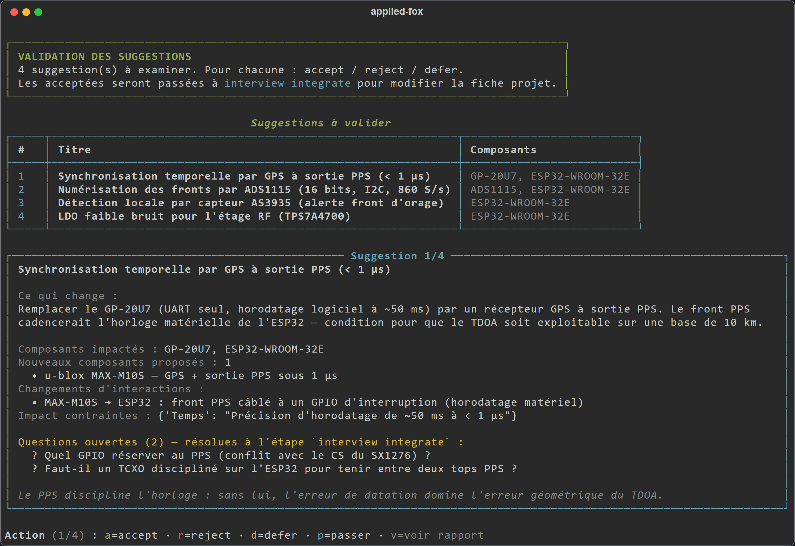
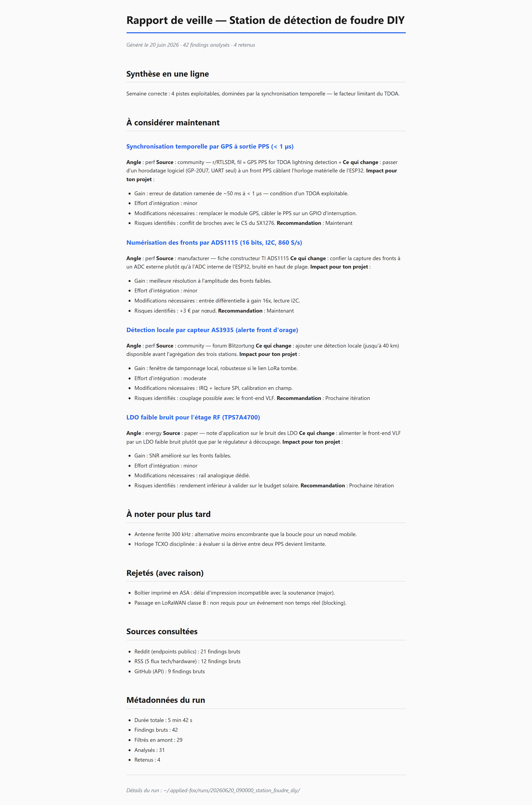

IA locale / multi-agents
Applied Fox
L'assistant R&D qui ne quitte jamais ta machine — et ne décide jamais à ta place. Un système multi-agents de veille technologique, 100 % local via Ollama.

Contexte
Les outils IA pour ingénieurs souffrent de deux défauts pouvant rendre leur usage néfaste pour un projet : ils envoient tes données à des serveurs que tu ne contrôles pas, et ils ont tendance à prendre le projet en main à ta place.
Applied Fox est construit contre ces deux défauts. Objectif : une veille technologique structurée, locale et sous contrôle humain, pour des projets longs où la connaissance du contexte est le principal investissement.
Approche
Tu décris ton projet une fois dans un fichier .md structuré (composants, contraintes, objectifs, prochain livrable). Applied Fox fait tourner une chaîne de 4 agents locaux qui collectent, filtrent, évaluent et synthétisent l'information pertinente pour ce projet, puis tu valides chaque suggestion.
Scout → Reddit + RSS + GitHub (filtrage déterministe en 5 étapes)
Integrator → évaluation de faisabilité
Judge → classement + ETA (filtres déterministes v1.5)
Reporter → rapport HTML + 3-8 suggestions priorisées
↓
validation humaine : accepter / rejeter / reporter
Chaque agent a un contrat Pydantic strict : si l'un échoue, on sait exactement lequel et pourquoi. Le Judge ne voit jamais les trouvailles rejetées par l'Integrator. Trois couches de filtres déterministes court-circuitent ~70 % des appels LLM avant même de solliciter le modèle.
Contraintes non négociables : local par défaut (aucun appel réseau silencieux, aucune télémétrie), LLM hot-swappable par rôle, adaptable au matériel, et l'humain reste l'arbitre final.
Résultat
- MVP livré : module interview (4 modes), pipeline 4 agents, 3 sources actives, boucle de validation, menu multi-projets.
- Run complet : ~4-6 min à froid, ~1-2 min avec le cache LLM chaud (RTX 3070 8 Go).
- Le Judge tourne en ~10 s sur ~20 trouvailles, grâce aux filtres déterministes (−70 % d'appels LLM).
- Zéro donnée envoyée à un cloud, zéro abonnement.

Démo & code
Pas de démo en ligne, c'est justement le point : tout tourne en local. Le dépôt contient un guide d'installation, une démo pas à pas et la documentation d'architecture.